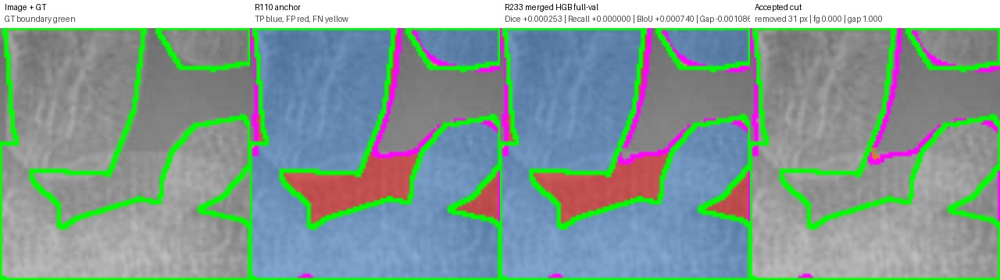
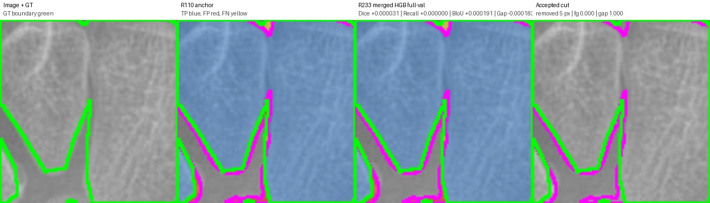
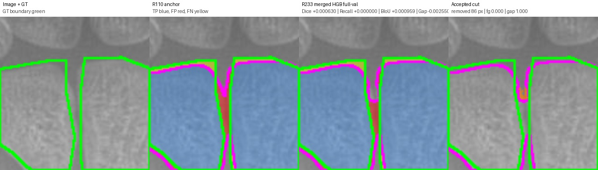
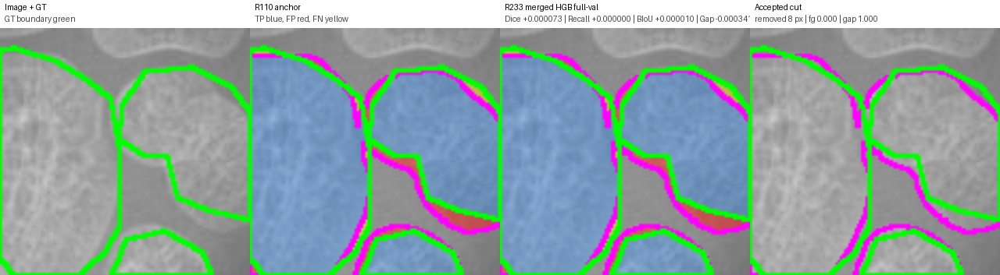
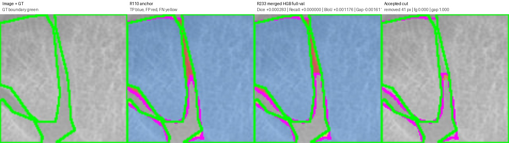
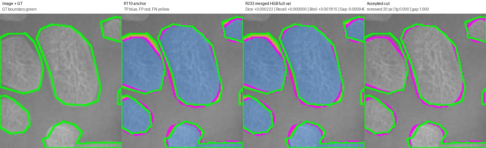
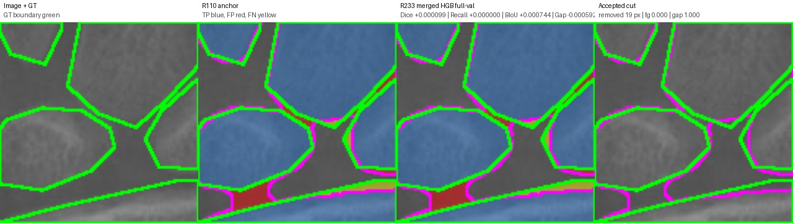
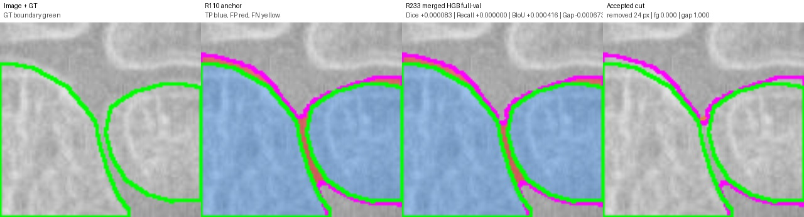
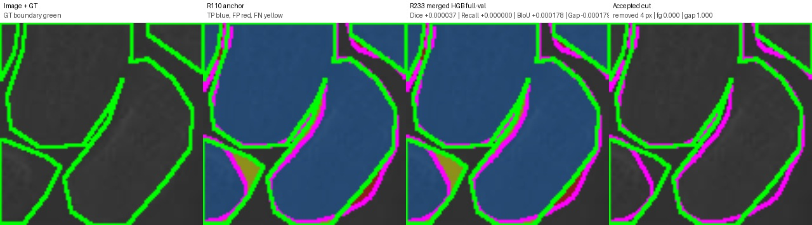

Legend: GT boundary green, prediction boundary magenta, TP blue tint, FP red, FN yellow. Accepted cuts: orange if true gap/background, red if GT foreground.
cut=31.0 px, Dice +0.000253, Recall +0.000000, BIoU +0.000740, gapFP -0.001086

{
"anchor_boundary_f1": "0.4076344385622736",
"anchor_boundary_iou": "0.25599300087489063",
"anchor_component_count_mae": "1.0",
"anchor_component_delta_mean": "1.0",
"anchor_dice": "0.8741845467526529",
"anchor_gap_region_fp_rate": "0.1957871878393051",
"anchor_iou": "0.7764900936748735",
"anchor_precision": "0.8566516068848201",
"anchor_recall": "0.8924501695948779",
"cut_pixels": "31.0",
"delta_boundary_f1": "0.0009377852061650538",
"delta_boundary_iou": "0.0007401225948540091",
"delta_component_count_mae": "0.0",
"delta_component_delta_mean": "0.0",
"delta_dice": "0.0002529894224063689",
"delta_gap_region_fp_rate": "-0.0010857763300760048",
"delta_iou": "0.000399296544753569",
"delta_precision": "0.0004860212264536923",
"delta_recall": "0.0",
"edited": "1.0",
"image": "11852.png",
"num_accepted_cuts": "1.0",
"r233_boundary_f1": "0.40857222376843866",
"r233_boundary_iou": "0.25673312346974464",
"r233_component_count_mae": "1.0",
"r233_component_delta_mean": "1.0",
"r233_dice": "0.8744375361750593",
"r233_gap_region_fp_rate": "0.1947014115092291",
"r233_iou": "0.7768893902196271",
"r233_precision": "0.8571376281112738",
"r233_recall": "0.8924501695948779"
}
cut=5.0 px, Dice +0.000031, Recall +0.000000, BIoU +0.000191, gapFP -0.000183

{
"anchor_boundary_f1": "0.3760599262329366",
"anchor_boundary_iou": "0.23157253910274422",
"anchor_component_count_mae": "2.0",
"anchor_component_delta_mean": "2.0",
"anchor_dice": "0.925741399762752",
"anchor_gap_region_fp_rate": "0.2176649226153452",
"anchor_iou": "0.8617491166077739",
"anchor_precision": "0.9180576432912881",
"anchor_recall": "0.9335548614341729",
"cut_pixels": "5.0",
"delta_boundary_f1": "0.00025146193796199423",
"delta_boundary_iou": "0.00019073461202306907",
"delta_component_count_mae": "0.0",
"delta_component_delta_mean": "0.0",
"delta_dice": "3.050520314240579e-05",
"delta_gap_region_fp_rate": "-0.00018294244630637224",
"delta_iou": "5.2868692659302496e-05",
"delta_precision": "6.0003767535343755e-05",
"delta_recall": "0.0",
"edited": "1.0",
"image": "12827.png",
"num_accepted_cuts": "1.0",
"r233_boundary_f1": "0.3763113881708986",
"r233_boundary_iou": "0.2317632737147673",
"r233_component_count_mae": "2.0",
"r233_component_delta_mean": "2.0",
"r233_dice": "0.9257719049658945",
"r233_gap_region_fp_rate": "0.21748198016903883",
"r233_iou": "0.8618019853004332",
"r233_precision": "0.9181176470588235",
"r233_recall": "0.9335548614341729"
}
cut=86.0 px, Dice +0.000630, Recall +0.000000, BIoU +0.000959, gapFP -0.002550

{
"anchor_boundary_f1": "0.3631018008085263",
"anchor_boundary_iou": "0.22182308037718904",
"anchor_component_count_mae": "0.0",
"anchor_component_delta_mean": "0.0",
"anchor_dice": "0.9164516103259003",
"anchor_gap_region_fp_rate": "0.16284825077805692",
"anchor_iou": "0.8457874323467386",
"anchor_precision": "0.9284615758203688",
"anchor_recall": "0.9047483830257138",
"cut_pixels": "86.0",
"delta_boundary_f1": "0.0012832128487773042",
"delta_boundary_iou": "0.0009585746577062682",
"delta_component_count_mae": "0.0",
"delta_component_delta_mean": "0.0",
"delta_dice": "0.0006301406235300622",
"delta_gap_region_fp_rate": "-0.002549776894521738",
"delta_iou": "0.0010740475050105003",
"delta_precision": "0.001294442660623285",
"delta_recall": "0.0",
"edited": "1.0",
"image": "13436.png",
"num_accepted_cuts": "1.0",
"r233_boundary_f1": "0.3643850136573036",
"r233_boundary_iou": "0.2227816550348953",
"r233_component_count_mae": "0.0",
"r233_component_delta_mean": "0.0",
"r233_dice": "0.9170817509494303",
"r233_gap_region_fp_rate": "0.1602984738835352",
"r233_iou": "0.8468614798517491",
"r233_precision": "0.9297560184809921",
"r233_recall": "0.9047483830257138"
}
cut=8.0 px, Dice +0.000073, Recall +0.000000, BIoU +0.000010, gapFP -0.000341

{
"anchor_boundary_f1": "0.27669350802966197",
"anchor_boundary_iou": "0.1605596620908131",
"anchor_component_count_mae": "4.0",
"anchor_component_delta_mean": "-4.0",
"anchor_dice": "0.8648620047409414",
"anchor_gap_region_fp_rate": "0.2727621156630611",
"anchor_iou": "0.7619003225626014",
"anchor_precision": "0.8488719930200673",
"anchor_recall": "0.8814659821390052",
"cut_pixels": "8.0",
"delta_boundary_f1": "1.5456358385512736e-05",
"delta_boundary_iou": "1.0409168094277499e-05",
"delta_component_count_mae": "0.0",
"delta_component_delta_mean": "0.0",
"delta_dice": "7.322512951835058e-05",
"delta_gap_region_fp_rate": "-0.0003406864832637968",
"delta_iou": "0.00011366345138463796",
"delta_precision": "0.00014109652907046133",
"delta_recall": "0.0",
"edited": "1.0",
"image": "13867.png",
"num_accepted_cuts": "1.0",
"r233_boundary_f1": "0.2767089643880475",
"r233_boundary_iou": "0.16057007125890738",
"r233_component_count_mae": "4.0",
"r233_component_delta_mean": "-4.0",
"r233_dice": "0.8649352298704598",
"r233_gap_region_fp_rate": "0.2724214291797973",
"r233_iou": "0.7620139860139861",
"r233_precision": "0.8490130895491378",
"r233_recall": "0.8814659821390052"
}
cut=41.0 px, Dice +0.000283, Recall +0.000000, BIoU +0.001176, gapFP -0.001611

{
"anchor_boundary_f1": "0.4545976069496804",
"anchor_boundary_iou": "0.29416131940393486",
"anchor_component_count_mae": "3.0",
"anchor_component_delta_mean": "-3.0",
"anchor_dice": "0.9403342687778893",
"anchor_gap_region_fp_rate": "0.210977095037913",
"anchor_iou": "0.8873876365647905",
"anchor_precision": "0.9201020949540429",
"anchor_recall": "0.9614762204441248",
"cut_pixels": "41.0",
"delta_boundary_f1": "0.001403375811058316",
"delta_boundary_iou": "0.0011762926471975965",
"delta_component_count_mae": "0.0",
"delta_component_delta_mean": "0.0",
"delta_dice": "0.00028257721583668793",
"delta_gap_region_fp_rate": "-0.001610812085019453",
"delta_iou": "0.0005034370629060092",
"delta_precision": "0.0005412520573491175",
"delta_recall": "0.0",
"edited": "1.0",
"image": "14041.png",
"num_accepted_cuts": "1.0",
"r233_boundary_f1": "0.4560009827607387",
"r233_boundary_iou": "0.29533761205113246",
"r233_component_count_mae": "3.0",
"r233_component_delta_mean": "-3.0",
"r233_dice": "0.940616845993726",
"r233_gap_region_fp_rate": "0.20936628295289356",
"r233_iou": "0.8878910736276965",
"r233_precision": "0.920643347011392",
"r233_recall": "0.9614762204441248"
}
cut=20.0 px, Dice +0.000222, Recall +0.000000, BIoU +0.001815, gapFP -0.000940

{
"anchor_boundary_f1": "0.35788797945755096",
"anchor_boundary_iou": "0.2179437060203284",
"anchor_component_count_mae": "1.0",
"anchor_component_delta_mean": "-1.0",
"anchor_dice": "0.9018459986963634",
"anchor_gap_region_fp_rate": "0.05983830027263326",
"anchor_iou": "0.8212381848317878",
"anchor_precision": "0.966445252780853",
"anchor_recall": "0.8453415719456805",
"cut_pixels": "20.0",
"delta_boundary_f1": "0.0024434827183378305",
"delta_boundary_iou": "0.001815015857728336",
"delta_component_count_mae": "0.0",
"delta_component_delta_mean": "0.0",
"delta_dice": "0.00022188089670349687",
"delta_gap_region_fp_rate": "-0.0009401146939926677",
"delta_iou": "0.00036805368387571313",
"delta_precision": "0.0005097553946836753",
"delta_recall": "0.0",
"edited": "1.0",
"image": "15446.png",
"num_accepted_cuts": "1.0",
"r233_boundary_f1": "0.3603314621758888",
"r233_boundary_iou": "0.21975872187805673",
"r233_component_count_mae": "1.0",
"r233_component_delta_mean": "-1.0",
"r233_dice": "0.9020678795930669",
"r233_gap_region_fp_rate": "0.05889818557864059",
"r233_iou": "0.8216062385156635",
"r233_precision": "0.9669550081755367",
"r233_recall": "0.8453415719456805"
}
cut=19.0 px, Dice +0.000099, Recall +0.000000, BIoU +0.000744, gapFP -0.000592

{
"anchor_boundary_f1": "0.4165490993799009",
"anchor_boundary_iou": "0.2630641084082715",
"anchor_component_count_mae": "2.0",
"anchor_component_delta_mean": "-2.0",
"anchor_dice": "0.9322967245782929",
"anchor_gap_region_fp_rate": "0.19494562338350316",
"anchor_iou": "0.8731796052700757",
"anchor_precision": "0.926983914358751",
"anchor_recall": "0.9376707843092974",
"cut_pixels": "19.0",
"delta_boundary_f1": "0.0009317215498741982",
"delta_boundary_iou": "0.0007436396754244012",
"delta_component_count_mae": "0.0",
"delta_component_delta_mean": "0.0",
"delta_dice": "9.944442567055845e-05",
"delta_gap_region_fp_rate": "-0.0005920663114268865",
"delta_iou": "0.0001744816425489626",
"delta_precision": "0.00019664926056028875",
"delta_recall": "0.0",
"edited": "1.0",
"image": "1620.png",
"num_accepted_cuts": "1.0",
"r233_boundary_f1": "0.4174808209297751",
"r233_boundary_iou": "0.2638077480836959",
"r233_component_count_mae": "2.0",
"r233_component_delta_mean": "-2.0",
"r233_dice": "0.9323961690039635",
"r233_gap_region_fp_rate": "0.19435355707207627",
"r233_iou": "0.8733540869126246",
"r233_precision": "0.9271805636193113",
"r233_recall": "0.9376707843092974"
}
cut=24.0 px, Dice +0.000083, Recall +0.000000, BIoU +0.000416, gapFP -0.000673

{
"anchor_boundary_f1": "0.2629297721548644",
"anchor_boundary_iou": "0.15136392757190545",
"anchor_component_count_mae": "1.0",
"anchor_component_delta_mean": "1.0",
"anchor_dice": "0.9196481734110146",
"anchor_gap_region_fp_rate": "0.11997531487559258",
"anchor_iou": "0.8512487791265523",
"anchor_precision": "0.9636778631621347",
"anchor_recall": "0.8794660554558494",
"cut_pixels": "24.0",
"delta_boundary_f1": "0.0006270450292976126",
"delta_boundary_iou": "0.0004157677226880596",
"delta_component_count_mae": "0.0",
"delta_component_delta_mean": "0.0",
"delta_dice": "8.318404788631995e-05",
"delta_gap_region_fp_rate": "-0.0006732306656568182",
"delta_iou": "0.00014255191813217216",
"delta_precision": "0.00018269784834779035",
"delta_recall": "0.0",
"edited": "1.0",
"image": "3249.png",
"num_accepted_cuts": "1.0",
"r233_boundary_f1": "0.263556817184162",
"r233_boundary_iou": "0.1517796952945935",
"r233_component_count_mae": "1.0",
"r233_component_delta_mean": "1.0",
"r233_dice": "0.9197313574589009",
"r233_gap_region_fp_rate": "0.11930208420993577",
"r233_iou": "0.8513913310446845",
"r233_precision": "0.9638605610104825",
"r233_recall": "0.8794660554558494"
}
cut=4.0 px, Dice +0.000037, Recall +0.000000, BIoU +0.000178, gapFP -0.000179

{
"anchor_boundary_f1": "0.45877446262431826",
"anchor_boundary_iou": "0.29766860949208995",
"anchor_component_count_mae": "1.0",
"anchor_component_delta_mean": "-1.0",
"anchor_dice": "0.9288746924847234",
"anchor_gap_region_fp_rate": "0.15706853247219232",
"anchor_iou": "0.8671951693863564",
"anchor_precision": "0.9284142061115628",
"anchor_recall": "0.9293356358800294",
"cut_pixels": "4.0",
"delta_boundary_f1": "0.0002118814321385165",
"delta_boundary_iou": "0.00017842274295226668",
"delta_component_count_mae": "0.0",
"delta_component_delta_mean": "0.0",
"delta_dice": "3.6858644199999624e-05",
"delta_gap_region_fp_rate": "-0.00017940437746680193",
"delta_iou": "6.425452769376339e-05",
"delta_precision": "7.364713583435378e-05",
"delta_recall": "0.0",
"edited": "1.0",
"image": "3602.png",
"num_accepted_cuts": "1.0",
"r233_boundary_f1": "0.4589863440564568",
"r233_boundary_iou": "0.2978470322350422",
"r233_component_count_mae": "1.0",
"r233_component_delta_mean": "-1.0",
"r233_dice": "0.9289115511289234",
"r233_gap_region_fp_rate": "0.15688912809472552",
"r233_iou": "0.8672594239140502",
"r233_precision": "0.9284878532473971",
"r233_recall": "0.9293356358800294"
}